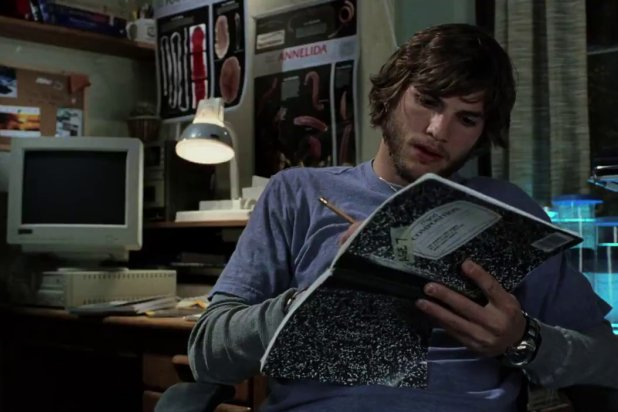

Chaos theory teaches us that small events can have enormous consequences. An opening title informs us that butterfly flapping its wings in Asia could result in a hurricane halfway around the world. Yes, although given the number of butterflies and the determination with which they flap their little wings, isn't it extraordinary how rarely that happens? "The Butterfly Effect" applies this theory to the lives of four children whose early lives are marred by tragedy. When one of them finds that he can go back in time and make changes, he tries to improve the present by altering the past.
Storyline: Evan Treborn grows up in a small town with his single, working mother and his friends. He suffers from memory blackouts where he suddenly finds himself somewhere else, confused. Evan's friends and mother hardly believe him, thinking he makes it up just to get out of trouble. As Evan grows up he has fewer of these blackouts until he seems to have recovered. Since the age of seven he has written a diary of his blackout moments so he can remember what happens. One day at college he starts to read one of his old diaries, and suddenly a flashback hits him like a brick!